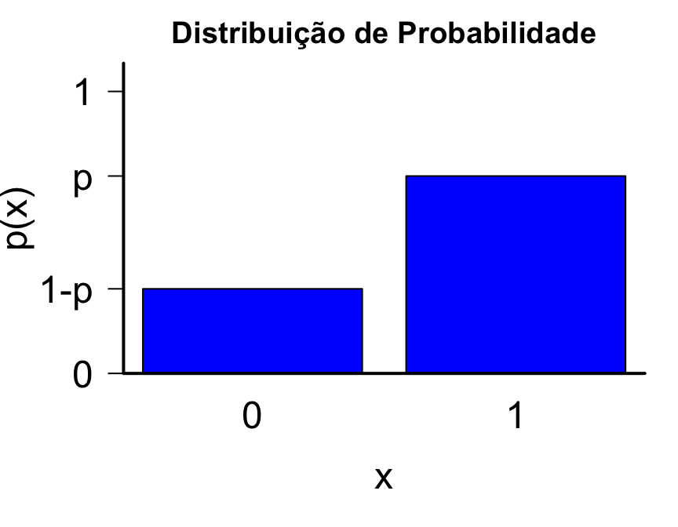
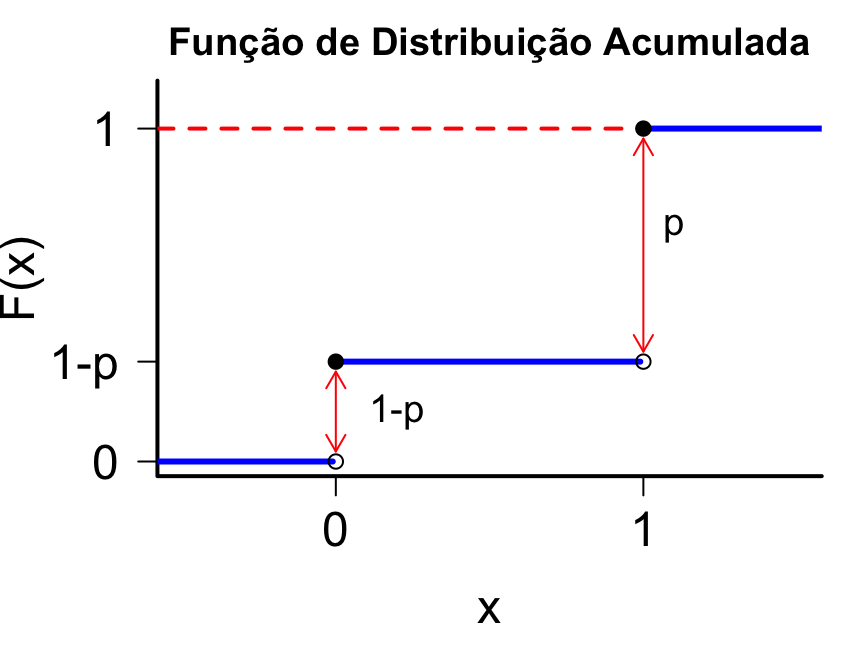

Esperança e Variância - variável aleatória discreta
Variância: variável aleatória discreta
- Vimos que a esperança nos dá a média ponderada de todos os resultados possíveis de uma v.a..
- No entanto, a esperança não descreve a dispersão dos dados.
- Considere as seguintes v.a.'s:
\[U=0, \mbox{ com probabilidade 1}\] \[ V= \begin{cases} -1, & \mbox{com prob. 1/2} \\ \;\; 1, & \mbox{com prob. 1/2} \end{cases} \quad \mbox{e} \quad W= \begin{cases} -10, & \mbox{com prob. 1/2} \\ \;\; 10, & \mbox{com prob. 1/2} \end{cases} \]
\[\mathbb E(U)=\mathbb E(V)=\mathbb E(W)=0\]
No entanto, claramente a dispersão é bem diferente para as três variáveis.
Variância: variável aleatória discreta
Queremos uma medida para quantificar quão distantes os valores da v.a. \(X\) estão da sua esperança.
Definição: Se \(X\) é uma v.a. com esperança \(\mathbb E(X)=\mu\), então a variância de \(X\) é: \[Var(X)=\mathbb E[(X-\mu)^2]\]
Notação: \(\sigma^2 = Var(X)\)
- Se \(X\) é uma v.a. discreta assumindo valores \(x_1, x_2, \ldots, x_n\) com respectivas probabilidades \(P(X=x_i) = p_i\), então:
\[Var(X) = \sum_{i=1}^n (x_i - \mu)^2 p_i\]
Propriedade Geral da Variância
Definição: \(Var(X)=\mathbb E([X-\mathbb E(X)]^{2})\)
Uma forma alternativa de calcular a variância é usando a fórmula: \[Var(X) = \mathbb E(X^{2}) - [\mathbb E(X)]^{2}\]
Demonstração: \[ \begin{aligned} \mathbb E([X-\mathbb E(X)]^{2}) &= \mathbb E([X-\mu]^{2}) \\ & = \mathbb E(X^{2}-2X\mu+\mu^{2}) = \mathbb E(X^{2}) - 2\mu \mathbb E(X) + \mu^{2} \\ & = \mathbb E(X^2) - 2\mu\mu + \mu^2 = \mathbb E(X^2)- 2\mu^{2} + \mu^{2} \\ & = \mathbb E(X^2) - \mu^{2} \\ & = \mathbb E(X^{2}) - [\mathbb E(X)]^2 \end{aligned} \]
Exemplo
Encontre \(Var(X)\), onde \(X\) é uma v.a. tal que:
\[ X= \begin{cases} 1, & \mbox{com probabilidade } p \\ 0, & \mbox{com probabilidade } 1-p \end{cases}\]
\[ \begin{aligned} \mathbb E(X) &= 1\times p +0\times (1-p) = p \\ Var(X) & =\mathbb E(X^2)-p^2 \end{aligned} \]
\[ X^2= \begin{cases} 1^2, & \mbox{com probabilidade } p \\ 0^2, & \mbox{com probabilidade } 1-p \end{cases} \]
\[ \begin{aligned} \mathbb E(X^2) &= 1\times p +0\times (1-p) = p \\ Var(X) & = p-p^2=p(1-p) \end{aligned} \]
Propriedades da Esperança
Para qualquer v.a. \(X\) e constantes \(a\) e \(b\): \[\mathbb E(aX + b) = a \mathbb E(X) + b\]
Casos particulares:- \(\mathbb E(X+b) = \mathbb E(X) + b\)
- \(\mathbb E(aX) = a \mathbb E(X)\)
Se \(X_1, X_2, \ldots, X_n\) são variáveis aleatórias: \[ \mathbb E\left(\sum_{i=1}^n X_i \right) = \sum_{i=1}^n \mathbb E(X_i)\]
Propriedades da Esperança
Proposição: Se \(X\) é uma v.a. discreta com valores \(x_i\) e função de massa \(p(x_i)\), então para qualquer função \(g\): \[ \mathbb E[g(X)] = \sum_{i} g(x_i)p(x_i) \]
Exemplo: Seja \(X\) uma v.a. tal que:
\[ X= \begin{cases} 1, & \mbox{com probabilidade } p \\ 0, & \mbox{com probabilidade } 1-p \end{cases}\]
\[\mathbb E(X^2) = 1^2 \times p + 0^2 \times (1-p) = p\]
Propriedades da Variância
Para qualquer v.a. \(X\) e constantes \(a\) e \(b\): \[Var(aX + b) = a^2Var(X)\]
Casos particulares:- \(Var(X+b) = Var(X)\)
- \(Var(aX) = a^2 Var(X)\)
Se \(X_1, X_2, \ldots, X_n\) são variáveis aleatórias independentes: \[ Var \left(\sum_{i=1}^n X_i \right) = \sum_{i=1}^n Var(X_i)\]
Medidas de posição para v.a.'s discretas
- A média, valor esperado ou esperança de uma variável aleatória discreta \(X\), cuja f.d.p. é dada por \(P\left(X=x_{i}\right)=p_i\) é dada pela expressão:
\[\mu_{X}=\mathbb E\left(X\right)=\sum_{i\geq 1}x_ip_i\]
- A mediana (Md) é o valor que satisfaz:
\[P\left(X \geq Md\right)\geq \frac{1}{2} \quad \mbox{e} \quad P\left(X \leq Md\right)\geq \frac{1}{2}\]
- A moda (Mo) é o valor da variével \(X\) que tem maior probabilidade de ocorrência:
\[P\left(X=Mo\right)=\max\{p_{1},p_{2},\ldots \}\]
Medidas de posição para v.a.'s discretas
Exemplo: considere a v.a. discreta \(X\), tal que:
| \(X\) | -5 | 10 | 15 | 20 |
|---|---|---|---|---|
| \(P(X=x)\) | 0.3 | 0.2 | 0.4 | 0.1 |
- \(\mu_{X}=\mathbb E(X)=(-5)\times 0.3 + 10 \times 0.2 + 15 \times 0.4 + 20 \times 0.1=8.5\)
- \(Mo(X)=15\)
- \(P(X \leq 10)= P(X \geq 15)=0.5\), então a mediana é \(Md(X)=\frac{10+15}{2}=12.5\)
- Obs: note que nem a média (8.5) nem a mediana (12.5) são valores assumidos pela variável \(X\).
Medidas de posição para v.a.'s discretas
Exemplo: considere a v.a. \(X\) tal que:
| X | 2 | 5 | 8 | 15 | 20 |
|---|---|---|---|---|---|
| \(P(X=x)\) | 0.1 | 0.3 | 0.2 | 0.2 | 0.2 |
\[\mu_{X}=10.3\]
\[Mo(X)=5\]
\[Md(X)=8\]
Medidas de posição para v.a.'s discretas
Exemplo: Considere a v.a. \(X\) do slide anterior e seja \(Y = 5X - 10\)
| \(Y\) | 0 | 15 | 30 | 65 | 90 |
|---|---|---|---|---|---|
| \(P(Y=y)\) | 0.1 | 0.3 | 0.2 | 0.2 | 0.2 |
\[\mu_{Y}=41.5, \qquad Mo(Y)=15 \qquad \mbox{e} \qquad Md(Y)=30\]
Note que, como \(Y = 5X - 10\):
\[\mu_{Y}=5\mu_{X}-10 = 5\times 10.3 - 10 = 41.5\]
\[Mo(Y)=5Mo(X)-10 = 5 \times 5 - 10 = 15\]
\[Md(Y)=5Md(X)-10 = 5 \times 8 = 10= 30\]
Exemplo
Considere uma urna contendo três bolas vermelhas e cinco pretas.
Retire três bolas, sem reposição, e defina a variável aleatória \(X\) igual ao número de bolas pretas.
Obtenha a distribuição de \(X\). Calcule a esperança e a variância.
Fonte: Morettin | Bussab, Estatística Básica \(5^a\) edição, pág 135.
Repare que não há reposição:
- a primeira extração tem 5 possibilidades em 8 de ser uma bola preta;
- a segunda terá 5 em 7 se a primeira for vermelha, ou 4 em 7 se a primeira foi preta, e assim por diante.
Exemplo (continuação)
Retirar 3 bolas, sem reposição, de uma urna com 3 bolas vermelhas e 5 pretas

Exemplo (continuação)
A partir do gráfico, podemos construir uma tabela com os eventos do espaço amostral:
| Extrações | Probabilidade |
|---|---|
| PPP | \(5/8\times 4/7\times3/6 = 5/28\) |
| PPV | \(5/8\times4/7\times3/6 = 5/28\) |
| PVP | \(5/8\times3/7\times4/6 = 5/28\) |
| VPP | \(3/8\times5/7\times4/6 = 5/28\) |
| PVV | \(5/8\times3/7\times2/6 = 5/56\) |
| VPV | \(3/8\times5/7\times2/6 = 5/56\) |
| VVP | \(3/8\times2/7\times5/6 = 5/56\) |
| VVV | \(3/8\times2/7\times1/6 = 1/56\) |
Exemplo (continuação)
Como \(X\) é o número de bolas pretas, temos que:
Somando as probabilidades dos eventos, encontradas anteriormente, obtemos a função de distribuição de \(X\), \(p_X(x)\).
Eventos \(X=x\) \(p_X(x) = P(X=x)\) \(\{VVV\}\) 0 \(0.02\) \(\{VVP\} \cup \{VPV\} \cup \{PVV\}\) 1 0.27 \(\{PPV\} \cup \{PVP\} \cup \{VPP\}\) 2 0.53 \(\{PPP\}\) 3 0.18
Exemplo (continuação)
Podemos calcular a esperança e a variância de \(X\) a partir de sua função de probabilidade:
\[ \begin{aligned} \mu &= \mathbb E (X ) = \sum_{x=0}^3 xp_X (x) \\ & = 0 \times 0.02 + 1 \times 0.27 + 2 \times 0.53 + 3 \times 0.18 = 1.87 \\ \\ Var(X) & = \mathbb E[(X-\mu)^2] = \sum_{x=0}^3 (x-\mu)^2 p_X(x) \\ & = (0-1.87)^2 \times 0.02 + (1-1.87)^2 \times 0.27 + \\ & + (2-1.87)^2\times 0.53 + (3-1.87)^2 \times 0.18= 0.51 \end{aligned} \]
Exemplo
O tempo \(T\), em minutos, necessário para um operário processar certa peça é uma v.a. com a seguinte distribuição de probabilidade:
\(T\) 2 3 4 5 6 7 \(P(T=t)\) \(0.1\) \(0.1\) \(0.3\) \(0.2\) \(0.2\) \(0.1\)
Calcule o tempo médio de processamento.
Cada peça processada paga ao operador \(\$2.00\) mas, se ele processa a peça em menos de 6 minutos, ganha \(\$0.50\) por minuto poupado. Por exemplo, se ele processa a peça em 4 minutos, ganha um bônus de \(\$1.00\). Encontre a distribuição, a média e a variância da v.a. \(S\): quantia paga por peça.
Fonte: Morettin & Bussab, Estatística Básica \(5^a\) edição, pág 140.
Exemplo (continuação)
Tempo médio de processamento \[ \begin{aligned} \mathbb E (T) & = \displaystyle \sum_{t=2}^7 t P(T=t) \\ & = 2\times 0.1 + 3\times 0.1 + 4\times 0.3 + 5\times 0.2 + 6\times 0.2 + 7\times 0.1 = 4.6 \end{aligned} \]
Podemos trocar os valores na tabela do tempo, pelo total ganho por peça. Note, contudo, que o operário receberá \(\$ 2.00\) no evento \(\{T=6\} \cup \{T=7\}\), logo somamos suas probabilidades. Seja \(S\) a v.a. "ganho final".
| \(S\) | \(\$4.00\) | \(\$3.50\) | \(\$3.00\) | \(\$2.50\) | \(\$2.00\) |
|---|---|---|---|---|---|
| \(P(S=s)\) | \(0.1\) | \(0.1\) | \(0.3\) | \(0.2\) | \(0.3\) |
Exemplo (continuação)
Obtemos a média e a variância de \(S\) através da definição:
\[ \begin{aligned} \mathbb E (S) &= \displaystyle \sum_{s} s P(S=s) \\ &= 4\times 0.1 + 3.5\times 0.1 + 3\times 0.3 + 2.5 \times 0.2 + 2\times 0.3 = 2.75 \\ \\ \mathbb E (S^2) & = \displaystyle \sum_{s} s^2 P(S=s) \\ &= 16\times 0.1 + 12.25 \times 0.1 + 9\times 0.3 + 6.25\times 0.2 + 4\times 0.3 = 7.975 \end{aligned} \]
Então, \[\mbox{Var} (S) = 7.975 - (2.75)^2 = 0.4125\]
Principais Modelos Discretos
Uniforme Discreta
Exemplo: Uma rifa tem 100 bilhetes numerados de 1 a 100. Tenho 5 bilhetes consecutivos numerados de 21 a 25, e meu colega tem outros 5 bilhetes, com os números 1, 11, 29, 68 e 93.
Quem tem maior probabilidade de ser sorteado?
- espalhar os números é a melhor forma de ganhar o sorteio?
- assumindo honestidade da rifa, todos os números têm a mesma probabilidade de ocorrência, com \(\frac{1}{100}\) para cada um.
- como eu e meu colega temos 5 bilhetes, temos a mesma probabilidade de ganhar a rifa: \(\frac{5}{100}=\frac{1}{20}\).
- assim, a probabilidade de ganhar depende somente da quantidade de bilhetes que se tem na mão, independente da numeração.
Uniforme Discreta
- A v.a. discreta \(X\), assumindo valores \(x_{1},x_{2},...,x_{k}\), segue uma distribuição uniforme discreta se, e somente se, cada valor possível tem a mesma probabilidade de ocorrer, isto é,
\[P(X=x_i) = p(x_i) = \frac{1}{k}, \quad \forall \; 1\leq i \leq k\]
Exemplo: lançamento de um dado honesto de 6 faces
| \(X\) | 1 | 2 | 3 | 4 | 5 | 6 |
|---|---|---|---|---|---|---|
| \(p(x)\) | \(\frac{1}{6}\) | \(\frac{1}{6}\) | \(\frac{1}{6}\) | \(\frac{1}{6}\) | \(\frac{1}{6}\) | \(\frac{1}{6}\) |
Uniforme Discreta
A média e a variância são dadas por:
\(\mathbb E(X)=\displaystyle \sum_{i=1}^k x_iP(X=x_i)= \frac{1}{k}\sum_{i=1}^k x_i\)
\(Var(X) = \displaystyle \sum_{i=1}^k (x_i - \mathbb E(X))^2 P(X=x_i) = \frac{1}{k} \sum_{i=1}^k (x_i - \mathbb E(X))^2\)
ou
\(Var(X) = \mathbb E(X^2) - [\mathbb E(X)]^2 = \displaystyle \frac{1}{k} \left[\sum_{j=1}^{k}x_{j}^{2} - \frac{1}{k} \left ( \displaystyle\sum_{j=1}^{k}x_{j} \right)^{2} \right]\)
Uniforme Discreta
Exemplo: lançamento de um dado honesto de 6 faces
| \(X\) | 1 | 2 | 3 | 4 | 5 | 6 |
|---|---|---|---|---|---|---|
| \(p(x)\) | \(\frac{1}{6}\) | \(\frac{1}{6}\) | \(\frac{1}{6}\) | \(\frac{1}{6}\) | \(\frac{1}{6}\) | \(\frac{1}{6}\) |
Calculando a esperança e a variância de \(X\):
\(\mathbb E(X) = \frac{1}{6} (1+2+3+4+5+6)= \frac{21}{6} = 3.5\)
\(Var(X) = \displaystyle \frac{1}{6} \left[(1 + 4 + 9 + 16 + 25 + 36) - \frac{1}{6} (21)^{2} \right] = \frac{1}{6} \times \frac{35}{2} = 2.92\)
Uniforme Discreta
Cálculo da função de distribuição acumulada (f.d.a.) de uma variável uniforme discreta:
\[F(x)= P(X\leq x)= \sum_{x_i \leq x} \frac{1}{k} = \frac{\#(x_i \leq x)}{k}\]
Exemplo: voltando ao exemplo do lançamento de um dado honesto de 6 faces
\(F(2)= P(X\leq2)=P(X=1)+P(X=2)=\frac{2}{6}\)
\(F(2.5)= P(X\leq2.5)= P(X=1)+P(X=2)=\frac{2}{6}\)
Uniforme Discreta - f.d.a
| \(X\) | \(p(x)\) | \(F(x)\) |
|---|---|---|
| 1 | \(\frac{1}{6}\) | \(\frac{1}{6}\) |
| 2 | \(\frac{1}{6}\) | \(\frac{2}{6}\) |
| 3 | \(\frac{1}{6}\) | \(\frac{3}{6}\) |
| 4 | \(\frac{1}{6}\) | \(\frac{4}{6}\) |
| 5 | \(\frac{1}{6}\) | \(\frac{5}{6}\) |
| 6 | \(\frac{1}{6}\) | \(\frac{6}{6}\) |
Uniforme Discreta - Gráficos
Bernoulli
Em muitas aplicações, cada observação de um experimento aleatório é binária: tem apenas dois resultados possíveis.
Por exemplo, uma pessoa pode:
- aceitar ou recusar uma oferta de cartão de crédito de seu banco.
- votar sim ou não em uma assembléia.
Modelo Bernoulli
- Considere um experimento aleatório com dois resultados possíveis: sucesso e fracasso.
- Seja \(p\) a probabilidade de sucesso.
- Exemplo: lançar uma moeda e verificar se cai cara ou coroa. Consideramos como sucesso, a obtenção de cara. Se a moeda é honesta, \(p=1/2\).
- Esse tipo de experimento é conhecido como Ensaio de Bernoulli.
Modelo Bernoulli
- Exemplo: lançar um dado, sendo "sucesso" o obtenção da face 6. Se o dado é honesto, a probabilidade de sucesso é \(p=1/6\).
- Exemplo: Uma pessoa é escolhida ao acaso entre os moradores de uma cidade, e é perguntado a ela se concorda com um projeto.
- As possíveis respostas são apenas "Sim" ou "Não". \[\Omega=\{\mbox{Sim},\mbox{Não}\}\]
\[ X = \begin{cases} 1, & \mbox{se a pessoa respondeu sim } (sucesso) \\ 0, & \mbox{caso contrário } (fracasso) \\ \end{cases} \]
\[P(X=1)=P(sucesso)=p \;\; \rightarrow \;\; P(X=0)=P(fracasso)=1-p\]
Modelo Bernoulli
Seja \(X\) uma v.a. discreta assumindo apenas valores 0 e 1, onde \(X=1\) corresponde a sucesso e seja \(p\) a probabilidade de sucesso.
A distribuição de probabilidade de \(X\) é dada por:
\[ P(X=x) = \begin{cases} p & \mbox{se } x=1 \\ 1-p & \mbox{se } x=0 \\ \end{cases} \]
Ou de forma equivalente, podemos escrever como: \[P(X=x) = p^{x}(1-p)^{1-x}, \quad \mbox{para } x=0,1\]
Notação: \(X \sim b(p)\)
Bernoulli - Esperança e Variância
Se \(X\) é um v.a. Bernoulli, \(X \sim b(p)\), então:
\[\mathbb E(X) = p \quad \mbox{e} \quad Var(X)=p(1-p)\]
Demonstração:
- Esperança: \(\mathbb E(X)= 0\times(1-p) + 1\times p = p\)
- \(\mathbb E(X^{2})= 0^{2}\times(1-p) + 1^{2}\times p = p\)
- Variância: \[\begin{aligned} Var(X) &= \mathbb E(X^{2})-[\mathbb E(X)]^{2} \\ & = p-p^{2} =p(1-p) \end{aligned} \]
Bernoulli
A função de distribuição acumulada de uma v.a. Bernoulli é: \[ F(x) = \begin{cases} 0, & x < 0 \\ 1-p, & 0 \leq x < 1 \\ 1, & x \geq 1 \end{cases} \]

Bernoulli
Exemplo: lançamos um dado e consideramos sucesso a obtenção da face 5
Supondo que o dado seja honesto, a probabilidade de sucesso é \(p = 1/6\). Então:
\[ \begin{aligned} P(X=x) &= \left(\frac{1}{6} \right)^x \left(\frac{5}{6} \right)^{1-x} \qquad \mbox{para } x=0,1 \\ &= \begin{cases} 5/6 & \mbox{se } x=0 \\ 1/6 & \mbox{se } x=1 \\ \end{cases} \end{aligned} \]
- Encontre a esperança e variância de X.
\(\qquad \mathbb E(X)=\frac{1}{6} \qquad \qquad \mathbb E(X^2)=\frac{1}{6}\)
\(\qquad Var(X)=\frac{1}{6}-\frac{1}{36}=\frac{6-1}{36}=\frac{5}{36}\)
Modelo Binomial
Ao obtermos uma amostra do experimento/fenômeno aleatório com observações binárias, podemos resumir os resultados usando o número ou a proporção de observações com o resultado de interesse.
Sob certas condições, a v.a. \(X\) que conta o número de vezes que um resultado específico ocorreu, dentre dois possíveis, tem uma distribuição de probabilidade chamada Binomial.
- Considere um experimento aleatório com espaço amostral \(\Omega\) e o evento \(A\).
- Vamos dizer que ocorreu sucesso se o evento \(A\) aconteceu. Se \(A\) não aconteceu ocorreu fracasso.
- Repetimos o experimento \(n\) vezes, de forma independente.
- Seja \(X\) o número de sucessos nos \(n\) experimentos.
Exemplo: vacinas
Sabe-se que a eficiência de uma vacina é de \(80\%\).
Um grupo de 3 indivíduos é sorteado, dentre a população vacinada, e cada um é submetido a testes para averiguar se está imunizado.
Nesse caso, consideramos como sucesso a imunização.
\[ X_i = \begin{cases} 1, & \mbox{indivíduo i está imunizado} \\ 0, & \mbox{caso contrário} \end{cases} \]
Pelo enunciado, sabe-se que \(P(X_{i}=1)=p=0.8\).
Exemplo: vacinas
- Os indivíduos 1, 2 e 3 são independentes.
- As v.a.'s \(X_1\), \(X_2\) e \(X_3\) são Bernoulli.
- Se o interesse está em estudar \(X=\) número de indivíduos imunizados no grupo, \(X\) poderá assumir valores \(\{0,1,2,3\}\).
- Note que \(X=X_{1}+X_{2}+X_{3}\).
Exemplo: vacinas
| evento | P(evento) | X |
|---|---|---|
| \(X_{1}=0\), \(X_{2}=0\), \(X_{3}=0\) | \((0.2)^{3}\) | 0 |
| \(X_{1}=1\), \(X_{2}=0\), \(X_{3}=0\) | \(0.8\times(0.2)^{2}\) | 1 |
| \(X_{1}=0\), \(X_{2}=1\), \(X_{3}=0\) | \(0.8\times(0.2)^{2}\) | 1 |
| \(X_{1}=0\), \(X_{2}=0\), \(X_{3}=1\) | \(0.8\times(0.2)^{2}\) | 1 |
| \(X_{1}=1\), \(X_{2}=1\), \(X_{3}=0\) | \((0.8)^{2}\times0.2\) | 2 |
| \(X_{1}=1\), \(X_{2}=0\), \(X_{3}=1\) | \((0.8)^{2}\times0.2\) | 2 |
| \(X_{1}=0\), \(X_{2}=1\), \(X_{3}=1\) | \((0.8)^{2}\times0.2\) | 2 |
| \(X_{1}=1\), \(X_{2}=1\), \(X_{3}=1\) | \((0.8)^{3}\) | 3 |
Modelo Binomial
- Assim, as probabilidades de cada valor possível de \(X\) são:
\(X\) 0 1 2 3 \(P(X=x)\) \((0.2)^{3}\) \(3\times0.8\times(0.2)^{2}\) \(3\times(0.8)^{2}\times0.2\) \((0.8)^{3}\)
- E o comportamento de \(X\) é completamente determinado pela função:
\[P(X=x)={3\choose x}(0.8)^{x}(0.2)^{3-x}, \qquad x=0,1,2,3\]
Binomial
Modelo Geral: Considere a repetição de \(n\) ensaios \(X_i\) Bernoulli independentes e todos com a mesma probabilidade de sucesso \(p\).
A variável aleatória \(X=X_{1}+...+X_{n}\) representa o total de sucessos e corresponde ao modelo Binomial com parâmetros \(n\) e \(p\), ou seja, \(X\sim Bin(n,p)\).
A probabilidade de se observar \(x\) é dada pela expressão geral: \[P(X=x)={n\choose x}p^{x}(1-p)^{n-x}, \qquad x=0,1,...,n\]
A esperança e variância de uma v.a. Binomial são dadas por: \[\mathbb E(X)=np \qquad \mbox{e} \qquad Var(X)=np(1-p)\]
Modelo Binomial
Distribuição de probabilidade de uma \(Bin(3, p)\), com \(p=0.2, 0.5\) e \(0.8\).
Modelo Binomial
Exemplo: Vacina
- No exemplo da vacina, temos então que o número de indíviduos imunizados segue uma distribuição Binomial com \(n=3\) e \(p=0.8\)
\[X\sim Bin(3,0.8)\]
- Qual a probabilidade de que dentre os 3 indíviduos, nenhum tenha sido imunizado? \[ P(X=0) = {3 \choose 0} (0.8)^0 (0.2)^3 = 0.008\]
- Encontre a esperança e variância:
\[\mathbb E(X)=3\times 0.8 = 2.4 \qquad \mbox{e} \qquad Var(X)=3\times0.8\times0.2 = 0.48\]
Exemplo: Inspeção
Um inspetor de qualidade extrai uma amostra aleatória de 10 tubos armazenados num depósito onde, de acordo com os padrões de produção, se espera um total de \(20\%\) de tubos defeituosos.
Qual é a probabilidade de que não mais do que \(2\) tubos extraídos sejam defeituosos?
Se \(X\) denotar a variável "número de tubos defeituosos em 10 extrações independentes e aleatórias", qual o seu valor esperado? Qual a variância?
Exemplo: Inspeção
Note que a variável aleatória \(X\) = número de tubos defeituosos em 10 extrações tem distribuição binomial, com parâmetros \(n=10\) e \(p=0.2\).
Então, "não mais do que dois tubos defeituosos" é o evento \(\{X\leq2\}\).
Sabemos que, para \(X \sim Bin(10, 0.2)\) \[P(X=x) = { 10\choose x } (0.2)^x (0.8)^{10-x}, \qquad x=0,1, \ldots, 10\]
e que \[\begin{aligned} P(X\leq2) &= P(X=0) + P(X=1) + P(X=2) \\ &=(0.8)^{10} + 10 (0.2)(0.8)^{9} + 45 (0.2)^2 (0.8)^8 = 0.678 \end{aligned} \]
Exemplo: Inspeção
Se \(X \sim Bin(n,p)\), então \(\mathbb E(X) = np\) e \(Var(X) = np(1-p)\)
Então:
\(\mathbb E(X) = 10 (0.2) = 2\)
\(Var(X) = 10 (0.2)(0.8) = 1.6\)
Quando se encontram quatro ou mais tubos defeituosos, o processo de produção é interrompido para revisão. Qual é a probabilidade que isto aconteça?
\[ \begin{aligned} P(X\geq 4) &= 1 - P(X < 4) \\ &= 1 - P(X \leq 3) \\ &= 1-0.879 = 0.121 \end{aligned} \]
Exemplo: Comprador A ou B?
Exemplo: Um industrial fabrica peças, das quais 1/5 são defeituosas. Dois compradores A e B classificaram um grande lote de peças adquiridas em categorias \(I\) e \(II\), pagando \(\$ 1.20\) e \(\$ 0.80\) por peça, respectivamente, do seguinte modo:
- Comprador A: retira uma amostra de cinco peças; se encontrar mais que uma defeituosa, classifica como \(II\).
- Comprador B: retira uma amostra de dez peças; se encontrar mais que duas defeituosas, classifica como \(II\).
Em média, qual comprador oferece mais lucro?
Fonte: Morettin & Bussab, Estatística Básica \(5^a\) edição, pág 159.
Exemplo: Comprador A ou B?
Sabemos que 1/5 das peças são defeituosas.
Podemos nos concentrar na probabilidade dos vendedores julgarem um lote como tipo \(I\) ou \(II\).
Seja \(X\) o número de peças defeituosas em \(n\) testes.
O experimento do comprador A tem distribuição \(X_A \sim Bin(5, 1/5)\) enquanto o experimento do comprador B tem distribuição \(X_B \sim Bin(10, 1/5)\).
Para o comprador A, temos que: \[ \begin{aligned} P(X_A > 1 ) &= 1 - P(X_A = 0 ) - P(X_A = 1 ) \\ &= 1 - {5 \choose 0} \left (1-\frac{1}{5} \right)^5- {5 \choose 1} \left( \frac{1}{5} \right) \left (1-\frac{1}{5} \right)^4 = 0.263 \end{aligned}\]
Exemplo: Comprador A ou B?
De modo similar, para o comprador B temos: \[\begin{aligned} P(X_B > 2 ) &= 1 - {10 \choose 0} \left (1-\frac{1}{5} \right )^{10} - {10 \choose 1} \frac{1}{5} \left (1-\frac{1}{5} \right )^9 \\ &- {10 \choose 2} \left( \frac{1}{5} \right)^2 \left (1-\frac{1}{5} \right )^8 = 0.322 \end{aligned}\]
Como o segundo comprador irá classificar o lote como \(II\) com maior probabilidade que o primeiro, ele é o que oferece menor lucro para o fornecedor.
Mas podemos verificar o lucro esperado do vendedor.
Exemplo: Comprador A ou B?
Preço por peça na categoria \(I\): $1.20. Preço por peça na categoria \(II\): $0.80.
Se o industrial decidir vender o lote para o comprador A, temos que
\[\mathbb E(\mbox{lucro A}) = 1.20 \times 0.737 + 0.80 \times 0.263 \approx 1.09\]
Ou seja, ele irá lucrar em média \(\$ 1.09\) por peça.
Já se ele vender para o comprador B, temos que
\[\mathbb E(\mbox{lucro B}) = 1.20 \times 0.678 + 0.80 \times 0.322 \approx 1.07\]
que é um lucro dois centavos inferior.
Portanto, é mais interessante ao industrial que o comprador A examine mais peças.
Leituras
- Ross: capítulo 5
- Magalhães: capítulo 3
Slides produzidos pelos professores:
Samara Kiihl
Tatiana Benaglia
Benilton Carvalho